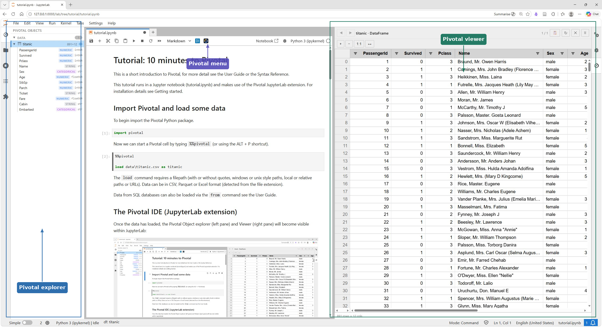
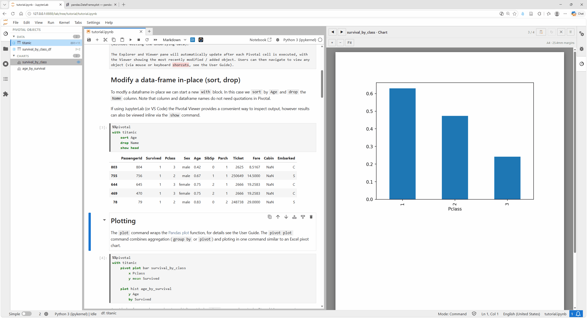
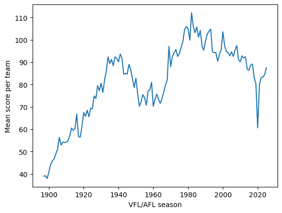
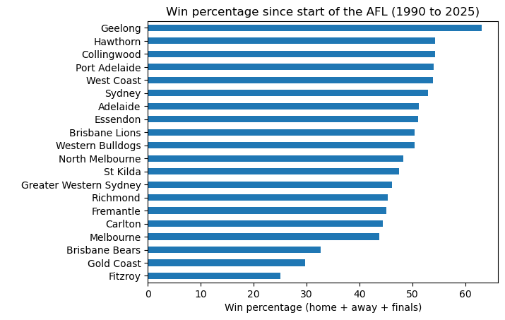
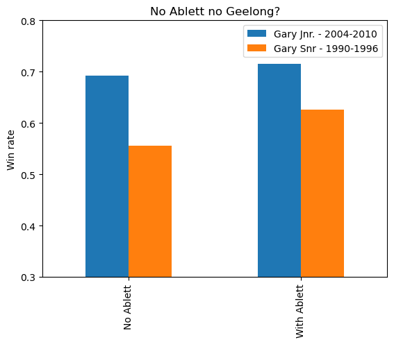

Tutorial: 10 minutes to Pivotal
This is a short introduction to Pivotal, for more detail see the User Guide or the Syntax Reference. This tutorial runs in a Jupyter notebook and makes use of the Pivotal JupyterLab extension. For installation details see Getting Started and JupyterLab.
Import Pivotal and load some data
To begin import the Pivotal Python package.
Now we can start a Pivotal cell by typing %%pivotal (or using the ALT + P shortcut).
The load command requires a filepath (with or without quotes, windows or unix style paths, local or relative paths or URLs). Data can be in CSV, Parquet or Excel format (detected from the file extension).
Data from SQL databases can also be loaded via the from command.
The Pivotal IDE (JupyterLab extension)
Once the data has loaded, the Pivotal Explorer (left pane) and Viewer (right pane) will become visible within JupyterLab:

The object explorer contains a list of all the objects in the current Pivotal session (dataframes, plots, tables, values) for now it will just contain the titanic dataframe. The Viewer provides a spreadsheet version of the titanic table with ability to scroll, sort, filter interactively (without editing the underlying data).
The Explorer and Viewer pane will automatically update after each Pivotal cell is executed, with the Viewer showing the most recently modified / added object. Users can then navigate to view any object via mouse or keyboard shortcuts.
Modify a data-frame in-place (sort, drop)
To modfy a dataframe in-place we can start a new with block. In this case we sort by Age and drop the Name column. Note that column and dataframe names do not need quotations in Pivotal.
If using JupyterLab (or VS Code) the Pivotal Viewer provides a convenient way to inspect output, however results can also be viewed inline via the show command.
| PassengerId | Survived | Pclass | Sex | Age | SibSp | Parch | Ticket | Fare | Cabin | Embarked | |
|---|---|---|---|---|---|---|---|---|---|---|---|
| 803 | 804 | 1 | 3 | male | 0.42 | 0 | 1 | 2625 | 8.5167 | NaN | C |
| 755 | 756 | 1 | 2 | male | 0.67 | 1 | 1 | 250649 | 14.5000 | NaN | S |
| 644 | 645 | 1 | 3 | female | 0.75 | 2 | 1 | 2666 | 19.2583 | NaN | C |
| 469 | 470 | 1 | 3 | female | 0.75 | 2 | 1 | 2666 | 19.2583 | NaN | C |
| 78 | 79 | 1 | 2 | male | 0.83 | 0 | 2 | 248738 | 29.0000 | NaN | S |
Plotting
The plot command wraps the Pandas plot function; see Charts, Tables, and Output for details. The pivot plot command combines aggregation (group by or pivot) and plotting in one command similar to an Excel pivot chart.
%%pivotal
with titanic
pivot plot bar survival_by_class
x Pclass
y mean Survived
plot hist age_by_survival
y Age
by Survived
As with dataframes, plots can be viewed inline with the show command or via the Pivotal Viewer pane (as shown here).

Create new data-frame (filter, select)
Add an alias to the with statement to create a new dataframe. Here thetitanic table remains unchanged.
| Age | Pclass | Survived | |
|---|---|---|---|
| 116 | 70.5 | 3 | 0 |
| 493 | 71.0 | 1 | 0 |
| 96 | 71.0 | 1 | 0 |
| 851 | 74.0 | 3 | 0 |
| 630 | 80.0 | 1 | 1 |
Error handling
Pivotal offers native error messages which are easier to interpret than full Python tracebacks (although these are still available if required).
→ Available tables: oldest_passengers, survival_by_class_df, titanic
Show full traceback
Traceback (most recent call last):
File "C:\Users\hughe\.conda\envs\pivotal\Lib\site-packages\IPython\core\interactiveshell.py", line 3699, in run_code
exec(code_obj, self.user_global_ns, self.user_ns)
~~~~^^^^^^^^^^^^^^^^^^^^^^^^^^^^^^^^^^^^^^^^^^^^^
File "C:\Users\hughe\AppData\Local\Temp\ipykernel_27348\462969525.py", line 5, in <module>
wrong_table = wrong_table.loc[:, ['Age']]
^^^^^^^^^^^
NameError: name 'wrong_table' is not defined
→ Did you mean 'Age'?
Show full traceback
Traceback (most recent call last):
File "C:\Users\hughe\.conda\envs\pivotal\Lib\site-packages\IPython\core\interactiveshell.py", line 3699, in run_code
exec(code_obj, self.user_global_ns, self.user_ns)
~~~~^^^^^^^^^^^^^^^^^^^^^^^^^^^^^^^^^^^^^^^^^^^^^
File "C:\Users\hughe\AppData\Local\Temp\ipykernel_27348\318122693.py", line 5, in <module>
titanic = titanic.loc[:, ['age']]
~~~~~~~~~~~^^^^^^^^^^^^
File "C:\Users\hughe\.conda\envs\pivotal\Lib\site-packages\pandas\core\indexing.py", line 1200, in __getitem__
return self._getitem_tuple(key)
~~~~~~~~~~~~~~~~~~~^^^^^
File "C:\Users\hughe\.conda\envs\pivotal\Lib\site-packages\pandas\core\indexing.py", line 1386, in _getitem_tuple
return self._getitem_lowerdim(tup)
~~~~~~~~~~~~~~~~~~~~~~^^^^^
File "C:\Users\hughe\.conda\envs\pivotal\Lib\site-packages\pandas\core\indexing.py", line 1093, in _getitem_lowerdim
section = self._getitem_axis(key, axis=i)
File "C:\Users\hughe\.conda\envs\pivotal\Lib\site-packages\pandas\core\indexing.py", line 1438, in _getitem_axis
return self._getitem_iterable(key, axis=axis)
~~~~~~~~~~~~~~~~~~~~~~^^^^^^^^^^^^^^^^
File "C:\Users\hughe\.conda\envs\pivotal\Lib\site-packages\pandas\core\indexing.py", line 1378, in _getitem_iterable
keyarr, indexer = self._get_listlike_indexer(key, axis)
~~~~~~~~~~~~~~~~~~~~~~~~~~^^^^^^^^^^^
File "C:\Users\hughe\.conda\envs\pivotal\Lib\site-packages\pandas\core\indexing.py", line 1576, in _get_listlike_indexer
keyarr, indexer = ax._get_indexer_strict(key, axis_name)
~~~~~~~~~~~~~~~~~~~~~~^^^^^^^^^^^^^^^^
File "C:\Users\hughe\.conda\envs\pivotal\Lib\site-packages\pandas\core\indexes\base.py", line 6302, in _get_indexer_strict
self._raise_if_missing(keyarr, indexer, axis_name)
~~~~~~~~~~~~~~~~~~~~~~^^^^^^^^^^^^^^^^^^^^^^^^^^^^
File "C:\Users\hughe\.conda\envs\pivotal\Lib\site-packages\pandas\core\indexes\base.py", line 6352, in _raise_if_missing
raise KeyError(f"None of [{key}] are in the [{axis_name}]")
KeyError: "None of [Index(['age'], dtype='str')] are in the [columns]"
Aggregation (group by)
Following Pandas and R style syntax aggregation requires two commands: first group by, then agg. See Grouping & Aggregation for details.
| Pclass | Sex | Survived | |
|---|---|---|---|
| 0 | 1 | female | 0.968085 |
| 1 | 1 | male | 0.368852 |
| 2 | 2 | female | 0.921053 |
| 3 | 2 | male | 0.157407 |
| 4 | 3 | female | 0.500000 |
| 5 | 3 | male | 0.135447 |
Pivot tables
Now lets try the same aggregation, but this time use pivot to reshape the output with Sex across the columns. Note here we are overwriting the dataframe created in the previous step.
| Sex | Pclass | female | male |
|---|---|---|---|
| 0 | 1 | 0.968085 | 0.368852 |
| 1 | 2 | 0.921053 | 0.157407 |
| 2 | 3 | 0.500000 | 0.135447 |
Tables
Pivotal supports generation of publication-ready tables via the Great Tables package, including ability to define merged cell headings via spanner command and apply number formats via format command. See Charts, Tables, and Output for the full table syntax.
%%pivotal
with titanic_survival_rates
cast Pclass as string
table survival_table
title "Titanic survival rates by class and sex"
stub Pclass "Passenger Class"
label female as "F", male as "M"
spanner female, male "Sex"
format number 2
show
| Titanic survival rates by class and sex | ||
| F | M | |
|---|---|---|
Parameters (Scalars, Lists, and Dictionaries)
Pivotal also supports definition of Scalars, Lists and Dictionaries. Note that within Pivotal brackets for lists are optional. See Values: Scalars, Dicts, and Lists for more detail.
In Pivotal the sole purpose of these parameter objects is to pass metadata to dataframe operations:
%%pivotal
list mylist = Age, Survived, Pclass
scalar myvar = 20
dict config
column_lists
compact = Age, Pclass
thresholds
adult_age = 18
# dict config from config.json # load from json or yaml
with titanic as temp
filter Age > myvar
select mylist
with titanic as adults
filter Age >= config.thresholds.adult_age
select config.column_lists.compact
Under the hood all Pivotal objects are just Python objects. Any dataframe, Scalar, List or Dictionary defined in Pivotal exists in the Python namespace and can be accessed within Python code cells:
myvar: 20
Age Survived Pclass
227 20.5 0 3
402 21.0 0 3
408 21.0 0 3
102 21.0 0 1
627 21.0 1 1
Varaibles defined in Python can also be accessed within Pivotal code by adding a : prefix:
| Pclass | Parch | |
|---|---|---|
| 567 | 3 | 4 |
| 25 | 3 | 5 |
| 885 | 3 | 5 |
| 13 | 3 | 5 |
| 610 | 3 | 5 |
Mutation (column expressions)
Columns can be modified and added with a simple newcol = <expression> syntax. Below we add two new columns in preparation for some data analysis:
Above we add a new column for the total family members on-board (Parents & Children Parch + Siblings and Spouses SibSp). Second, we apply a conditional assignment (via an indented where clause) to define a binary male column.
Data cleaning
Next we need to handle missing values in the Age column. First we use an aggregation function median() (in this case grouped by Sex and Pclass via an indented by clause) to create some replacement values. Then the fillna command is used to replace NAs in Age with median_age.
Last we include an assert command as a quality check on our data preparation pipeline. This will throw an error if we have missed any NAs.
%%pivotal
list features = Age, Age2, family, male, Fare
with X
median_age = median(Age)
by Sex, Pclass
fillna Age median_age
Age2 = Age**2
select features
# Should be no NAs here
assert features not null
→ [Pivotal] assert failed on titanic: Age must not be null: 177 row(s)
Show full traceback
Traceback (most recent call last):
File "C:\Users\hughe\.conda\envs\pivotal\Lib\site-packages\IPython\core\interactiveshell.py", line 3699, in run_code
exec(code_obj, self.user_global_ns, self.user_ns)
~~~~^^^^^^^^^^^^^^^^^^^^^^^^^^^^^^^^^^^^^^^^^^^^^
File "C:\Users\hughe\AppData\Local\Temp\ipykernel_42152\124378638.py", line 6, in <module>
if _pvt_dq_bad: raise AssertionError(f"[Pivotal] assert failed on titanic: Age must not be null: {_pvt_dq_bad} row(s)")
^^^^^^^^^^^^^^^^^^^^^^^^^^^^^^^^^^^^^^^^^^^^^^^^^^^^^^^^^^^^^^^^^^^^^^^^^^^^^^^^^^^^^^^^^^^^^^^^^^^^^^^
AssertionError: [Pivotal] assert failed on titanic: Age must not be null: 177 row(s)
Python analysis
Now lets jump into Python to do some analysis. In this case a simple linear regression to predict survival of Titanic passengers, using the titanic and X dataframes we built in Pivotal:
import statsmodels.api as sm
model = sm.Logit(titanic.Survived, X).fit()
print(model.summary())
titanic["predicted"] = model.predict(X)
Optimization terminated successfully.
Current function value: 0.494549
Iterations 6
Logit Regression Results
==============================================================================
Dep. Variable: Survived No. Observations: 891
Model: Logit Df Residuals: 886
Method: MLE Df Model: 4
Date: Fri, 15 May 2026 Pseudo R-squ.: 0.2573
Time: 13:36:27 Log-Likelihood: -440.64
converged: True LL-Null: -593.33
Covariance Type: nonrobust LLR p-value: 7.526e-65
==============================================================================
coef std err z P>|z| [0.025 0.975]
------------------------------------------------------------------------------
Age 0.0348 0.010 3.329 0.001 0.014 0.055
Age2 -0.0005 0.000 -2.402 0.016 -0.001 -9.09e-05
family -0.1962 0.056 -3.505 0.000 -0.306 -0.087
male -2.3253 0.175 -13.267 0.000 -2.669 -1.982
Fare 0.0168 0.003 5.954 0.000 0.011 0.022
==============================================================================
Since we have added a new column to the titanic table in Python it is good idea to update the Pivotal UI (Object Explorer / Viewer) via the update method, after which we will see the new predicted column in the titanic table.
[Pivotal] Updated viewer: titanic, survival_by_class_df, oldest_passengers, titanic_survival_rates, temp, X
Save to data package
The Pivotal save command exports all data-frames, plots and tables in the current session to a Frictionless data package (a simple folder structure with overarching JSON metadata).
At this point we have accumulated 6 data-frames, 2 charts and 1 table. We can choose which of these to include / exclude from the save, but for now lets just save all of them. By default charts are saved as both png images and csv data files.
Package 'titanic_results' saved to C:\pivotal-demo\tutorial\titanic_results (6 dataframe(s), 2 chart(s), 1 table(s), 3 parameter(s))
<pivotal.package.Package at 0x1e16213a270>
titanic_results/
├── charts/
│ ├── age_by_survival.csv
│ ├── age_by_survival.png
│ ├── survival_by_class.csv
│ └── survival_by_class.png
├── data/
│ ├── oldest_passengers.csv
│ ├── survival_by_class_df.csv
│ ├── temp.csv
│ ├── titanic.csv
│ ├── titanic_survival_rates.csv
│ └── X.csv
├── datapackage.json
├── parameters.json
└── tables/
└── survival_table.html
Football statistics (bulk load)
Let's now have a look at some Australian football statistics. This data (taken from akareen/AFL-Data-Analaysis on Github) are stored as a large number (129) CSV files (one for each year of VFL/AFL competition).
The bulk load command can be applied here to loop over all the data files in a folder, and concatenate to a single table.
Column loops and case assignment
Below we introduce some new Pivotal syntax: Column-wise loops. These can be useful in situations where we need to apply the same assignment / mutation to multiple columns, in this case a string replace function applied to team_1_team_name (Home team) and team_2_team_name (Away team).
The last statement is a "Case assignment" which allow for multiple where conditions and an optional default else value.
%%pivotal
with afl_games
team_2_score = team_2_final_goals*6 + team_2_final_behinds
team_1_score = team_1_final_goals*6 + team_1_final_behinds
team_score = (team_1_score + team_2_score)/2
# Column loop
for col in team_1_team_name, team_2_team_name
col = replace(col, "Kangaroos", "North Melbourne")
col = replace(col, "Footscray", "Western Bulldogs")
pivot plot line long_term_scoring_trend
x year "VFL/AFL season"
y mean team_score "Mean score per team"
show
# Case assignment
winner =
where team_1_score > team_2_score: team_1_team_name
where team_2_score > team_1_score: team_2_team_name
else "draw"

Pipeline functions
Pivotal also supports functions, which group together a reusable sequence of data operations (a pipeline).
In this example we apply the same operations (via the ha_games function) to the home and away teams in the afl_games table, then combine them into a single set of results for each team in each round.
Pivotal functions are non-recursive (i.e., more like Excel macros than Python functions), but they can still be called from within Python code if needed; see Pipeline Control for details.
%%pivotal
function ha_games(input, output, col)
with input as output
select col, winner, year, date
win = 1
where col == winner
else 0
select col as team_name, win, year, date
filter year >= 1990
ha_games(afl_games, home_games, team_1_team_name)
ha_games(afl_games, away_games, team_2_team_name)
with home_games as all_games
concat away_games
with all_games as all_games_mean
group by team_name
agg mean win
sort win
win = win * 100
plot barh win_rate_since_1990
x team_name " "
y win "Win percentage (home + away + finals)"
title "Win percentage since start of the AFL (1990 to 2025)"
show

Merging
The syntax of the Pivotal merge command should be familiar to regular Pandas users. Below we add an extra column players (names of players from each game). Since our cats_lineup table only includes one team and we use an inner merge, we're left with fewer rows (the 832 Geelong Cats games between 1990 and 2025).
%%pivotal
load data\AFL\lineups\team_lineups_geelong.csv as cats_lineup
with cats_lineup
select date, team_name, players
with all_games as games_with_lineup
show shape
inner merge cats_lineup on team_name, date
show shape
Self-indulgent Gary Ablett reference
No new syntax here. Just some stats showing the Geelong Cats win-rate with and without Gary Ablett (Senior/Junior) in the team.
%%pivotal
with games_with_lineup
ablett = "With Ablett"
where players contains "Gary Ablett"
else "No Ablett"
era =
where year<=1996: "Gary Snr - 1990-1996"
where year>=2004 and year <2011: "Gary Jnr. - 2004-2010"
#where year>2018 and year <2021: "Gary Jnr. return - 2018-2020"
pivot plot bar no_ablett
x ablett " "
y mean win "Win rate"
by era
ylim 0.3, 0.8
title "No Ablett no Geelong?"
show
